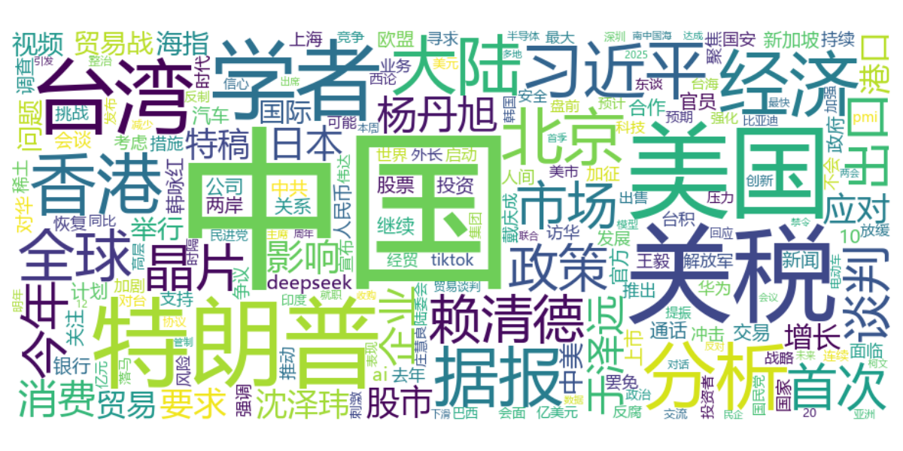

主流媒体形象分析
重点新闻网站等主流渠道的国家政治形象塑造
主流媒体文章图片主要宣传颜色
色彩分析
该图表展示了主流媒体报道中使用的主要宣传颜色分布，灰黑色系比例居高，体现了国外对政治宣传的主色调特征
主流媒体标题词云分析

文本分析
通过词云展示主流媒体标题中的高频关键词，"中国"、"学者"、"美国"、"关税"等词汇出现频率最高
综合分析结论
基于多源数据的国家政治形象传播效果评估与策略建议
核心洞察与策略建议
主流媒体形象特征
以黑灰为主色调，内容聚焦学者、关税、谈判等主题，呈现当代国际形势。
社交媒体情感分布
社交媒体上正面和中性评价占主导地位，特别是在重大政治事件期间，正面评论数量显著增加。
国际形象分析
总体来说，国际媒体的评论总体趋势向好，且聚焦于各种政治事件，评论量会呈现激增。
传播模式优化
积极评论获得更多点赞和转发，形成正向传播循环。建议构建"正能量内容池"，建立优质内容创作激励机制，提升传播效能。
核心结论与战略方向
综合分析表明，中国国家政治形象在各类媒体平台上整体呈现积极态势，特别是在国外受众和社交媒体受众中获得了广泛认同。主流媒体则聚焦于中国的历史遗留问题等，整体呈现负面居多。
社交媒体形象分析
YouTube社交平台上的国家政治形象传播与互动
分析显示，社交媒体上关于中国政治的评论中，正面情感占比33%，中性情感41%，负面情感26%
正面和中性评论获得的点赞数明显高于负面评论，表明社交媒体用户更倾向于支持正面评价
在重大政治事件期间，积极评论数量呈现显著峰值，而消极评论在常规时期保持稳定低水平
展示了所获取的数据中，来自TOP10国家用户的情感倾向与互动情况